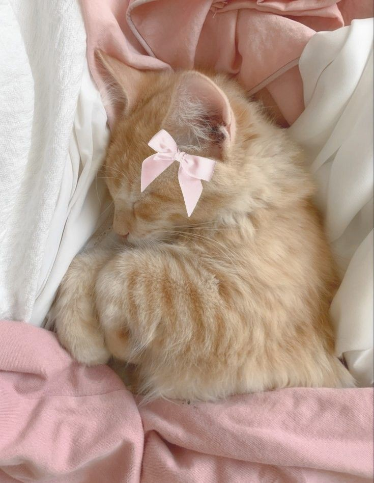

¡Hey!
Hola, babieca.
Primero que nada, te deseo un feliz cumpleaños, y que todo esté yendo genial en tu día especial.
Ojalá todo haya sido risas, felicidad, alegría; y que nada haya perturbado tu felicidad, porque no mereces menos que ser feliz.
Ya hace un tiempo que nos conocemos. Tenemos unos inicios de lo más particulares y pues… acá ando, intentando hacer un buen regalo (aunque solo suela hacer eso de manera presencial).
Me encantaría poder estar presente esta fecha y molestarte, pero lamentablemente no es el caso, y qué bueno, porque sé que no soportarías tanto ambiente u_u
No sé cuánto contenido vaya a tener esto, porque lo estoy haciendo sobre la marcha. No planeo qué voy a hacer al siguiente día, menos voy a planear algo así, jajaja (Obvio es broma. Soy de los que más se preocupan por su futuro); pero sí es verdad que no tengo algo planeado para esto, ni siquiera una cantidad de texto específico, pero bueno. Será interesante ver qué sale.
Sé que nuestras personalidades no se topan, no tenemos nada que ver el uno con el otro. Somos lo más opuesto que se puede, pero por alguna extraña razón nos llevamos bien. Capaz porque eres masoquista y te gusta que te moleste a cada rato, cosa que sigo sin entender, pero bueno, está bien, supongo, xd.
No sé qué pasará a futuro con exactitud, no sé si seguiremos hablando o no, pero bueno, las cosas pasan como tienen que pasar; por ahora no hace falta pensar en el futuro, sino en el presente.
A pesar de que suela molestarte, suela acabar con tu paciencia, suela ser malgeniado, amargado, seco, etc; ten presente que voy a desear siempre lo mejor para ti.
Sé que suelo ser duro en muchas ocasiones, y por esa razón no cualquiera logra quedarse. Pero detrás de todo siempre hay una buena razón. Que, tal vez no sea la mejor manera, puede que no; tampoco voy a buscar una excusa a eso. Simplemente, que todo lleva al mismo objetivo, mejorarte como persona.
Hay muchas cosas que no diré porque, bueno, no me gusta la idea de hablar sobre mí ni de cómo soy, o por qué soy así. Para que logre llegar a ese punto, falta.
Pero bueno, basta de eso; mejor escribamos otra cosa.
Eres rarita. Te ríes cuando te insulto. Te ilusionas con cosas que no siempre salen como esperas y terminas quedando clown, y sí, creo que es justo lo que estás pensando (el mastermind), y es gracioso leer tus mensajes acerca de eso y de como te esfuerzas porque siempre salgas mejor a pesar de que el 90% de las veces sea un desastre total y termines sacando 0 puntos (que ya sé que no es posible porque me lo explicaste, pero para mí sigue siendo un cero), pero así eres, es tu encanto, eres tierna así.
A veces me siento mal porque tú eres muy:
Y yo soy tan:
Y sé que en ocasiones pensarás que no me importa, cuando en realidad lo estoy tomando en cuenta, solo que mis respuestas suelen ser en base a mi personalidad, y es contradictorio, porque a veces pareciera que sí consumiera sustancias que alteran mi personalidad, pero no, son arranques de esquizofrenia, jajaja (ya sabes que tengo distintas personalidades).
Un gran abrazo de mi parte y que todo fluya en tu dirección. Mis mejores deseos y ánimos.
*Procedo a poner cosas randoms*
Pincha en el mensaje de arriba, porque capaz no te enteras, babieca